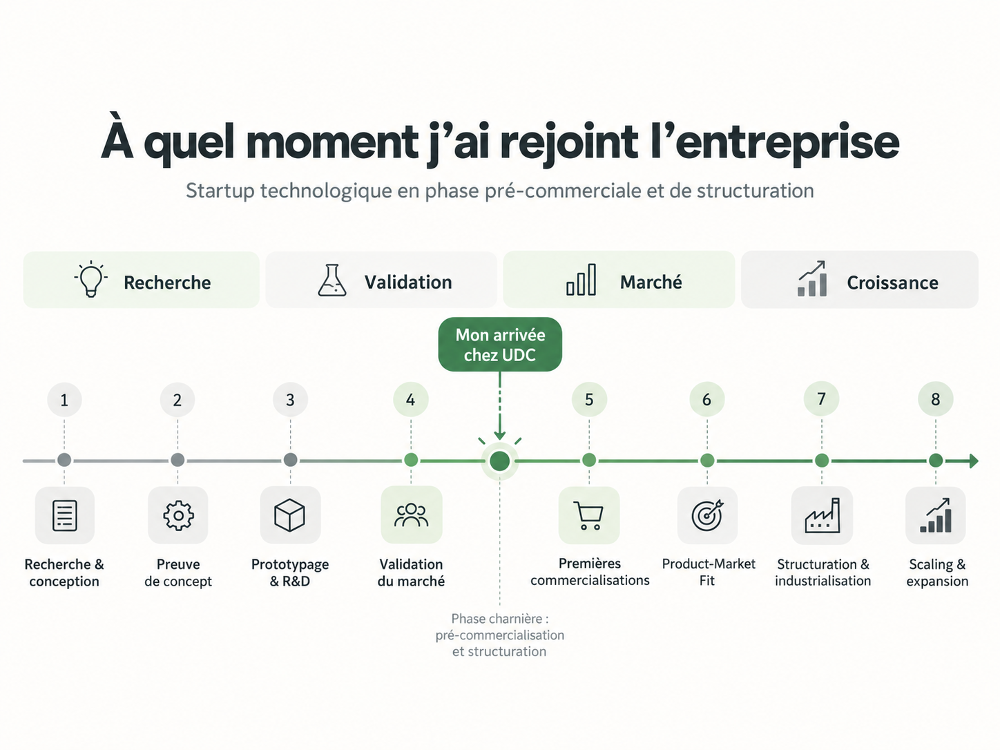
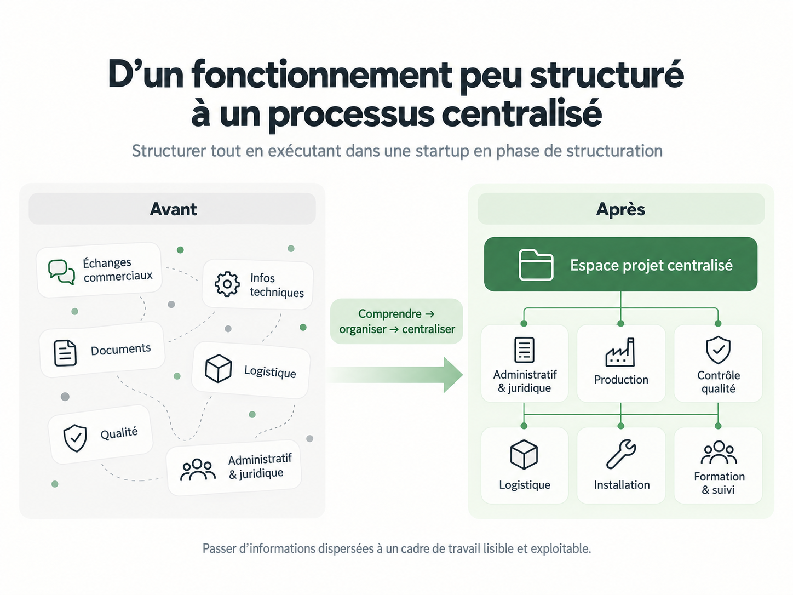
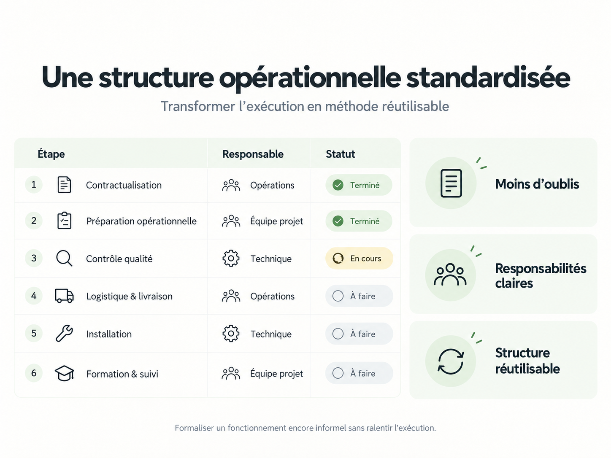

Structurer tout en exécutant.
Transformer un fonctionnement encore peu formalisé en un cadre opérationnel clair, centralisé, standardisé et réutilisable.
Projet mené au sein d’une startup française spécialisée dans les technologies immersives et la téléopération, dans une phase charnière entre pré-commercialisation et structuration opérationnelle.
Rejoindre une startup à un moment charnière.
J’ai rejoint l’entreprise dans une période où la technologie, les premiers cas d’usage et les opportunités commerciales existaient déjà, mais où une partie du fonctionnement opérationnel devait encore être formalisée pour accompagner les premières commercialisations et préparer la montée en charge.

Lecture simplifiée du parcours de maturité d’une startup deeptech — cliquer sur l’image pour l’ouvrir en taille réelle.
Partir d’un fonctionnement encore peu structuré.
Les informations utiles au déroulement d’un projet étaient réparties entre plusieurs sources : échanges commerciaux, éléments administratifs et juridiques, informations techniques, besoins logistiques, procédures de contrôle et connaissances terrain.
L’enjeu n’était pas de remplacer ce fonctionnement par un système théorique, mais d’abord de comprendre comment les équipes travaillaient réellement afin d’identifier ce qui devait être structuré.
Transformer l’information dispersée en cadre opérationnel.
J’ai regroupé et organisé les informations dans un espace projet centralisé afin de rendre le parcours plus lisible pour les différents intervenants : administratif et juridique, production, contrôle qualité, logistique, installation, formation et suivi.

Illustration anonymisée de la logique de centralisation — aucun document interne ni donnée sensible n’est présenté.
Transformer l’exécution en méthode réutilisable.
L’objectif n’était pas de créer un outil supplémentaire, mais de formaliser une structure opérationnelle standardisée : des étapes identifiées, des responsabilités plus lisibles et un suivi suffisamment clair pour pouvoir être repris sur chaque nouveau projet.

Exemple fictif illustrant la logique de standardisation utilisée dans le projet.
Moins d’oublis
Les étapes importantes deviennent visibles et ne reposent plus uniquement sur la mémoire individuelle.
Responsabilités plus claires
Chaque phase peut être associée à une fonction ou une équipe identifiée.
Structure réutilisable
La base peut être dupliquée puis adaptée aux spécificités de chaque nouveau projet.
Apporter de la structure sans ralentir le terrain.
Ce projet illustre surtout ma capacité à évoluer dans un environnement où tout n’est pas encore défini : comprendre rapidement le contexte, absorber des informations provenant de plusieurs métiers, poursuivre l’exécution et construire progressivement une organisation plus claire.
De la structuration à l’exécution terrain.
Cette logique de structuration a ensuite été mobilisée dans une opération événementielle plus complexe, avec des enjeux de logistique, coordination terrain, préparation, gestion des risques et retour d’expérience.